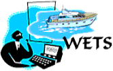
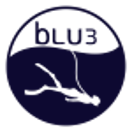
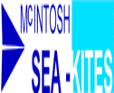

{kind=link}
{kind=link}
{kind=link}
{kind=link}
{kind=link}
{kind=link}
{kind=link}
{kind=link}
{kind=link}
{kind=link}
{kind=link}
{kind=link}
Prototypes, Projects, and Results
The common thread is to solve practical problems related to the ocean environment
WETS
A true "state of the art" demonstration project (1989-2002) Waterway Expert Traffic System (WETS) - Prototype type real time vessel traffic monitoring hardware and internet reporting software. Sponsor Florida Marine Patrol and Nova Southeastern University.
Modeling and Simulation
We develope closed form models from first pricipals and can use physics models to assit in understanding complex problems. Helping with success through modeled performace.
OSDC Provides Ocean Engineering Consulting, Ocean Related Products and Services
OSDC Blue Economy Affiliates
OceanSensorSystem
Manufacture Submersible Wave Gauges, Wave Staffs, Wave Loggers, Wireless Wave Staffs and Sonic Wave Sensors.
BLU3
BLU3 is an innovative company committed to developing the world’s most user-friendly ocean dive systems to ever float.
Industrial Divers
Commercial Diving inland, coastal, and offshore waters. Staffed with seventeen fulltime qualified commercial divers.
McIntosh Marine
Design, construct, install and monitor artificial reefs for the purpose of restoring or rehabilitating injured areas.
© 1998-2023 Ocean Systems Development Corporation, Inc. All Rights Reserved